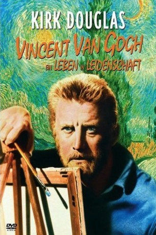
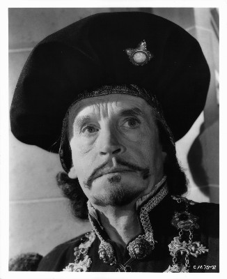
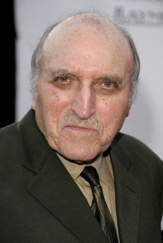
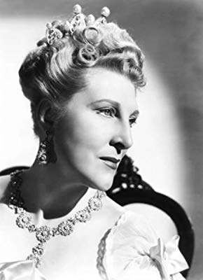

#6392 Vincent van Gogh - Ein Leben in Leidenschaft
Alternativ: Lust for Life
Auszeichnungen: 1 Oscars gewonnen für 3 Oscars nominiert 1 GoldenGlobes gewonnen
 
 IMDB-Wertung: 7.4 / 10
IMDB-Wertung: 7.4 / 10  Metascore: 0
Metascore: 0 
Biopic über Vincent van Gogh (1853 - 1890). Als junger Mann arbeitet Vincent als Missionar bei belgischen Bergarbeitern der Borinage. Er verliert den Posten, geht, weil er sich zur Malerei berufen fühlt, auf Anraten von Bruder Theo nach Paris, wo er die Impressionisten kennen lernt, sich mit Paul Gauguin anfreundet. Cousine Kay erwidert seine Liebe nicht. In der Provence in Arles ein Schaffensrausch mit Bildern leuchtender Intensität. Er lebt mit Gauguin, die Freundschaft scheitert. Nach Sanatoriumsaufenthalt nimmt er sich in Auvers das Leben.
Jahr: 1956
Dauer: 122 Minuten
FSK: 12
Land: USA Studio: MGMTonspuren: DD1.0 - ,
Untertitel: Deutsch,
Auflösung: 1080p (1920x752) Größe: 6748 MB
Genre: Drama, Biographie
Regisseur: Vincente Minnelli,  George Cukor
George Cukor
Drehbuch: Norman Corwin
Soundtrack:
Darsteller:
 Kirk Douglas als Vincent Van Gogh
Kirk Douglas als Vincent Van Gogh Anthony Quinn als Paul Gauguin
Anthony Quinn als Paul Gauguin- James Donald als Theo Van Gogh
- Everett Sloane als Dr. Gachet
- Niall MacGinnis als Roulin
- Noel Purcell als Anton Mauve
-  Henry Daniell als Theodorus Van Gogh
- Madge Kennedy als Anna Cornelia Van Gogh
- Lionel Jeffries als Dr. Peyron
 Laurence Naismith als Dr. Bosman
Laurence Naismith als Dr. Bosman Eric Pohlmann als Colbert
Eric Pohlmann als Colbert- Jeanette Sterke als Kay
- Wilton Graff als Rev. Stricker
- David Horne als Rev. Peeters
 Ronald Adam als Commissioner De Smet
Ronald Adam als Commissioner De Smet- David Leonard als Camille Pissarro
- William Phipps als Emile Bernard
- Betty Blythe als Dowager , uncredited
 Paul Bryar als Inspector , uncredited
Paul Bryar als Inspector , uncredited- Henry Corden als Waiter , uncredited
- Claire Du Brey als Housekeeper , uncredited
- Anthony Eustrel als Tersteeg , uncredited
-  Len Lesser als Cartoonist , uncredited
 George J. Lewis als Gendarme , uncredited
George J. Lewis als Gendarme , uncredited- Alec Mango als Dr. Rey , uncredited
 Belle Mitchell als Mme. Tanguy , uncredited
Belle Mitchell als Mme. Tanguy , uncredited- Marion Ross als Sister Clothilde , uncredited
- Betty Sinclair als Maid , uncredited
- Pamela Brown als Christine
- Jill Bennett als Willemien
- Toni Gerry als Johanna
-  Isobel Elsom als Mrs. Stricker
- Noel Howlett als Commissioner Van Den Berghe
- John Ruddock als Ducrucq
- Julie Robinson als Rachel
- David Bond als Seurat
- Frank Perls als Pere Tanguy
- Jay Adler als Waiter
- Laurence Badie als Adeline Ravoux
- Ernestine Barrier als Jet , uncredited
- Jerry Bergen als Henri de Toulouse-Lautrec , uncredited
- Mitzi Blake als Elizabeth , uncredited
- Germaine Delbat als Figuration , uncredited
- John Dodsworth als Handsome Man , uncredited
- Rex Evans als Durand-Ruel , uncredited
- Alex Frazer als Con , uncredited
- Roy Gordon als Elderly Gentleman , uncredited
- Al Haskell als Concertina Player , uncredited
- Fred Johnson als Cordan , uncredited
- Norman MacGowran als Pier , uncredited
Datei: X:\1950-1959\Vincent van Gogh - Ein Leben in Leidenschaft (1956, FSK12, 1920x752).mkv seit 12.06.2017
Festplatte: HD 1900-1970
 Es gibt insgesamt 141 Filme in der Gruppe '1950-1959'
Es gibt insgesamt 141 Filme in der Gruppe '1950-1959'